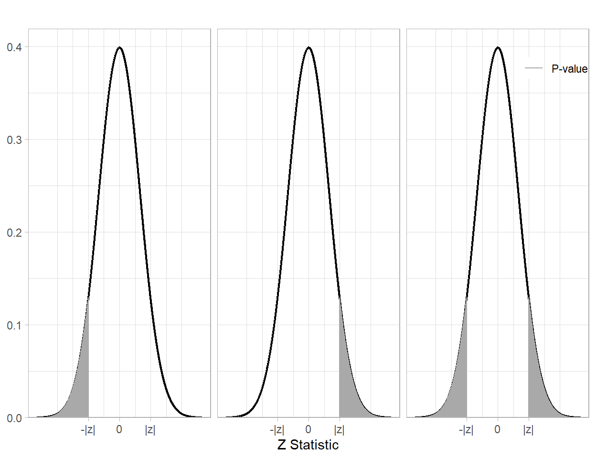

Introduction to Inference: Hypothesis Testing
In statistics, a hypothesis refers to an assumption about the population or an unknown parameter (any quantity which describes the population).
- For example, let \(\theta\) denote the proportion of boys among newborn babies in the United States. Then \(\theta = 0.5\) is a hypothesis stating that the population proportion is 0.5 (i.e., the probability that a mother gives birth to a boy is 0.5).
- Another competing hypothesis is \(\theta > 0.5\). This hypothesis states that the probability that a mother gives birth to a boy is greater than 0.5.
1 Two Kinds of Hypothesis
In statistical hypothesis testing, we specify two competing hypotheses: null hypothesis and alternative hypothesis.
- The null hypothesis is denoted by \(H_0\), and
- the alternative hypothesis is denoted by \(H_1\).
The procedure of hypothesis testing is developed based on the assumption of \(H_0\). If data suggest strong evidence against \(H_0\) in favor of \(H_1\), we conclude \(H_1\). Otherwise, we conclude \(H_0\).
Note: Conclusion of \(H_1\) does not imply that \(H_1\) is true. It implies that observed data (a sample) suggest strong evidence against \(H_0\) in favor of \(H_1\). Similarly, conclusion of \(H_0\) does not imply that \(H_0\) is true. It implies that observed data is not strong enough to reject the assumption of \(H_0\).
2 Analogy: Presumption of Innocence in U.S. Criminal Trials
Statistical hypothesis testing described in Section 1 is somewhat similar to criminal trials in the United States. There are two competing hypotheses in a criminal trial.
The first hypothesis is that the defendant is innocent, and it is assumed to be true until proven guilty (presumption of innocence).
The second hypothesis is that the defendant is guilty.
The prosecutor must provide strong evidence against the presumption of innocence in order to reject the presumption and conclude guilty.
| Actually Innocent | Actually Guilty | |
|---|---|---|
| Jury Decides: Innocent | ||
| Jury Decides: Guilty |
According to our criminal justice system, after seeing all evidence provided by the prosecutor, all 12 jurors must agree that the defendant is guilty in order to conclude guilty. Otherwise, we conclude that the defendant is innocent. (It is not because we truly believe that the defendant is innocent. It is because the evidence is not strong enough to reject the presumption of innocence.)
3 Three Kinds of Alternative Hypothesis
Let \(\theta\) be a parameter to be tested.
The null hypothesis is simply stated as \(H_0\): \(\theta = \theta_0\) where \(\theta_0\) is referred to as the null value. In the previous example, we may set \(H_0\): \(\theta = 0.5\) (i.e., the probability of giving birth to a boy is 0.5). There are three forms of alternative hypothesis \(H_1\)
\(H_1\): \(\theta > \theta_0\) which is referred to as the right-sided test, a type of one-sided test.
\(H_1\): \(\theta < \theta_0\) which is referred to as the left-sided test, a type of one-sided test.
\(H_1\): \(\theta \ne \theta_0\) which is referred to as the two-sided test.
Given \(H_0\): \(\theta = \theta_0\), the direction of \(H_1\) depends on the researcher’s question of interest.
In the previous example, we may set \(H_0\): \(\theta = 0.5\) and \(H_1\): \(\theta > 0.5\) (right-sided test) because the sex ratio at birth is known to be about 105 to 100 (boys to girls). The two competing hypotheses \(H_0\) and \(H_1\) are assumptions, and we need data (a sample) to conclude \(H_0\) or \(H_1\).
4 Test Statistic
A statistic (numeric summary of data) is called a test statistic if it is used to conduct statistical hypothesis testing.
In order to test \(H_0\): \(\theta = 0.5\) and \(H_1\): \(\theta > 0.5\), we need to analyze a categorical variable with two levels: boy and girl (male and female) at birth.
For the purpose of demonstration, let us revisit the king.csv dataset, a simple random sample of 2,500 mothers who gave births in 2001 in King County. Below are descriptive statistics and data visualization relevant to our hypothesis testing.
In the sample, we observed 1209 girls (\(\texttt{F}\)) and 1291 boys (\(\texttt{M}\)) out of \(n = 2500\) newborn babies.
The unknown parameter \(\theta\), the probability of giving birth to a boy, can be estimated by the sample proportion of boys, \(\hat{p} = \frac{1291}{2500} = 0.5164\), and we can calculate a test statistic as follows:
\[ Z = \frac{\hat{p} - \theta_0}{ \sqrt{ \frac{\theta_0 (1 - \theta_0)}{n} } } = \frac{0.5164 - 0.5}{ \sqrt{ \frac{0.5(1 - 0.5)}{2500} } } = 1.64 \, . \]
This test statistic is sometimes referred to as a Z statistic.
- The numerator of \(Z\) measures the discrepancy between the sample proportion (\(\hat{p} = 0.5164\)) and the null hypothesis (\(\theta_0 = 0.5\)).
- The denominator \(\texttt{SE} = \sqrt{ \frac{\theta_0 (1 - \theta_0) }{n} }\) is called the standard error of \(\hat{p}\).
- The standard error measures uncertainty in the sample proportion given the null hypothesis (\(\theta_0 = 0.5\)) and sample size (\(n = 2500\)).
In our case, a large positive value of \(Z\) is regarded as strong evidence against \(H_0\): \(\theta = 0.5\) in favor of \(H_1\): \(\theta > 0.5\), and it can be attained when \(\hat{p} > \theta_0\) and \(\texttt{SE}\) is small. However, we need a better mechanism for decision making than asking “is it a big \(Z\) score?”. First, we need to understand the challenges of making a decision based on data.
5 Two Kinds of Mistake in Statistical Hypothesis Testing
There are two kinds of mistake in statistical hypothesis testing.
The first kind of mistake is concluding \(H_1\) when \(H_0\) is true, and it is referred to as the Type I error.
The second kind of mistake is concluding \(H_0\) when \(H_1\) is true, and it is referred to as the Type II error.
Since the process of hypothesis testing is built upon the assumption of \(H_0\), we conclude \(H_0\) or \(H_1\) by fixing the probability of committing Type I error. This fixed probability is called the significance level, and denoted by \(\alpha\).
A typical choice is \(\alpha = 0.01\), \(\alpha = 0.05\), or \(\alpha = 0.1\). If we fix \(\alpha = 0.05\), the underlying interpretation is that we allow a 5% chance of committing Type I error (concluding \(H_1\) when \(H_0\) is true).
6 P-value
In statistics, the p-value is broadly defined as the probability of observing an outcome or a more unlikely outcome under the assumption of \(H_0\) being true.
If the observed outcome is very unlikely, we find the assumption that \(H_0\) is true to be unreasonable and find in favor of \(H_1\)
If the observed outcome is likely, then there is not reason to find the assumption that \(H_0\) is true unreasonable, but this does not prove that \(H_0\) is true.
After calculating \(Z = \texttt{z}\), the calculation of p-value depends on the direction of \(H_1\) as follows:
Right-sided test: p =
1 - pnorm(z)Left-sided test: p =
pnorm(z)Two-sided test: p =
2*pnorm(z)if \(\texttt{z} < 0\) or p =2*(1 - pnorm(z))if \(\texttt{z} > 0\)

We can compare p-value to the significance level \(\alpha\). If the value of \(p\) is less than or equal to \(\alpha\), we conclude \(H_1\). Otherwise, we conclude \(H_0\).
In the previous example, we can calculate the p-value for the right-sided test as follows.
We interpret p = 0.0505 as follows:
- If we repeat simple random sampling of size \(n = 2500\), the probability of observing \(Z = 1.64\) or \(Z > 1.64\) is p = 0.0505 if \(H_0\): \(\theta = 0.5\) is true.
Rewrite this in the context of the problem:
We can evaluate p-values based on its proximity to the the significance level:

To scale this to our \(\alpha = 0.05\), we would use the following scale

Therefore, with our \(p-value = 0.0505\) we have moderate evidence against the null hypothesis, and therefore find support for the alternative hypothesis.
Rewrite the evaluation of the p-value in context of the problem:
7 General Procedure of Statistical Hypothesis Testing
In summary, the procedure of statistical hypothesis testing is as follows:
- Choose a parameter of interest, and state \(H_0\) and \(H_1\) in terms of the parameter. It depends on the research question.
- Fix a significance level \(\alpha\). It is a small fixed probability of committing Type I error (concluding \(H_1\) when \(H_0\) is true).
- Calculate a test statistic and p-value under the assumption of \(H_0\).
- Evaluate the p-value and the level of evidence against \(H_0\) based on \(\alpha\).
- State the conclusion in the context.
Conditions for Our Analysis: We discussed the procedure when a parameter of interest is \(\theta\), the unknown probability of an event (the population proportion of a certain group). The procedure is known to be valid (and results trustworthy) when:
- we have a simple random sample of size \(n\) and
- the sample size \(n\) is as large as follows:
- \(n \theta_0 \ge 10\) or
- \(n(1 - \theta_0) \ge 10\).
In our example, \(n = 2500\) and \(\theta_0 = 0.5\), so \(n\) is large enough (\(n\theta_0 = 1250 \ge 10\) and \(n(1-\theta_0) = 1250 \ge 10\)).
8 Wrap-Up
In your groups work on the following problems. You can check your answers below. All calculations (numeric answers) must be rounded to four decimals (e.g., 0.6667 instead of 2/3, 0.5 or 0.5000 instead of 1/2) unless specified. Be ready to show your work on the board.
8.0.1 Problem 1
Fill in the blank.
- A [h…] is an assumption about the population or an unknown parameter.
TipAnswer
hypothesis
- A [t… s…] is a statistic which is used for statistical hypothesis testing.
TipAnswer
test statistic
- A [n… h…] is assumed to be true in the procedure of statistical hypothesis testing.
TipAnswer
null hypothesis
- If data provides evidence strongly against the null hypothesis in favor of the [a… h…], we conclude the [a… h…].
TipAnswer
alternative hypothesis
- […] refers to conclusion of \(H_1\) when \(H_0\) is true.
TipAnswer
Type I Error
- […] refers to conclusion of \(H_0\) when \(H_1\) is true.
TipAnswer
Type II Error
- A [s… l…] is denoted by \(\alpha\), and it is a small fixed probability of committing the Type I error.
TipAnswer
significance level
- We can compare a p-value to the [s… l…] to conclude \(H_0\) or \(H_1\).
TipAnswer
significance level
8.0.2 Problem 2
True or false?
- If \(H_0\) is true, it is possible to conclude \(H_1\).
- If \(H_1\) is true, it is possible to conclude \(H_0\).
- If we fix \(\alpha = 0.05\), it implies that we allow a probability of 0.05 for concluding \(H_0\) when \(H_1\) is true.
- When a p-value is less than \(\alpha\), we conclude \(H_1\).
- If \(H_0\) is concluded, it implies that \(H_0\) is true.
- If \(H_1\) is concluded, it implies that \(H_1\) is true.
- If a p-value is 0.09, it implies that the probability that \(H_0\) is true is 0.09.
8.0.3 Problem 3
Suppose a researcher calculated a Z statistic of 2.1. Using R, calculate the p-value for:
- right-sided test
TipAnswer
1 - pnorm(2.1)[1] 0.01786442- left-sided test
TipAnswer
pnorm(2.1)[1] 0.9821356- two-sided test
TipAnswer
2*(1 - pnorm(2.1))[1] 0.035728848.0.4 Problem 4
Multiple-choice: Suppose we test \(H_0\): \(\theta = 0.7\) versus \(H_1\): \(\theta > 0.7\) (right-sided test). Which of the following provides the strongest evidence for \(H_1\)?
A. \(\hat{p} = 0.75\) and \(n = 100\)
B. \(\hat{p} = 0.72\) and \(n = 1000\)
C. \(\hat{p} = 0.71\) and \(n = 10000\)
D. \(\hat{p} = 0.7\) and \(n = 500\)
E. \(\hat{p} = 0.8\) and \(n = 50\)
8.0.5 Problem 5
Multiple-choice: Which case results in the smallest p-value in Problem 4?
8.0.6 Problem 6
Multiple-choice: Suppose we test \(H_0\): \(\theta = 0.3\) versus \(H_1\): \(\theta < 0.3\) (left-sided test). Which of the following results in the smallest p-value?
A. \(\hat{p} = 0.35\) and \(n = 500\)
B. \(\hat{p} = 0.3\) and \(n = 100\)
C. \(\hat{p} = 0.29\) and \(n = 100\)
D. \(\hat{p} = 0.25\) and \(n = 100\)
E. \(\hat{p} = 0.25\) and \(n = 200\)
8.0.7 Problem 7
Multiple-choice: If we test \(H_0\): \(\theta = 0.3\) versus \(H_1\): \(\theta \ne 0.3\) (two-sided test), which case in Problem 6 results in the smallest p-value?
8.0.8 Problem 8
Multiple-choice: Which of the following can be a negative value?
9 Assignment
New Instruction: You must submit an html file generated by Quarto in Canvas. While you can check numeric answers here, complete work is expected for the problems below. The assignment will be graded based on the quality of the html document (e.g., completeness and organization. If an R code which is not demonstrated in the course material is used, it will be regarded as use of unacceptable sources and/or aids, and it will result in zero in the assignment. Such a case may be reported according to the CSUMB Academic Integrity Policy.*
9.0.1 Problem 1
Let \(\theta\) be the U.S. President’s approval rating (i.e., the population proportion of Americans who think the President is doing a good job). Suppose a 50% approval rating is a benchmark that the President is doing a good job, and it has been believed that the approval rating is below 50% since the election. In May 2025, Gallup randomly sampled 1,003 adults, and 431 of them responded that the President is doing a good job.
- What is the null value in this context? (Numeric answer)
TipAnswer
0.5
- Multiple-choice: Given the above description, what kind of statistical hypothesis testing do we want to do?
- Calculate the sample proportion of people who approved.
TipAnswer
0.4297
- Calculate the standard error.
TipAnswer
0.0158
- Calculate the Z statistic.
TipAnswer
-4.4521
- Calculate the p-value.
TipAnswer
< 0.0001
- Multiple-choice: At a significance level of \(\alpha = 0.05\), what do you conclude?
- Multiple-choice: The significance level \(\alpha = 0.05\) implies that we allowed a probability of 0.05 for…
- Multiple-choice: Which of the following statement is the most appropriate concluding statement?
9.0.2 Problem 2
A child, who loves outdoor activities on weekend, believes that it rains more often on weekend (Saturdays and Sundays) than on weekdays (Monday to Friday). Of the last 100 rainy days, 33 days were on Saturdays and Sundays. Does this weather record support the child’s hypothesis? Let \(\theta\) be the true proportion of Saturdays and Sundays among all rainy days.
- What is the null value in this context? (Numeric answer)
TipAnswer
0.2857
- Multiple-choice: Which of the following represents the alternative hypothesis?
- Calculate the sample proportion?
TipAnswer
0.33
- Calculate the standard error.
TipAnswer
0.0452
- Calculate the Z statistic.
TipAnswer
0.9803
- Calculate the p-value.
TipAnswer
0.1635
- Multiple-choice: At a significance level of \(\alpha = 0.1\), what do you conclude?
- Multiple-choice: In this hypothesis testing, the null hypothesis \(H_0\) is that the chance of rain is the same everyday, and the alternative hypothesis \(H_1\) is that the chance of rain is higher on Saturday and Sunday than on Monday to Friday. If the p-value is correctly calculated in part f, the p-value is greater than \(\alpha = 0.1\). Which of the following statement is the most appropriate concluding statement?
9.0.3 Problem 3
Suicide prevention begins with recognizing warning signs, listening without judgment, and connecting people with trusted support. Everyone can help by taking concerns seriously, encouraging open conversations, reducing stigma, and guiding someone toward a counselor, healthcare professional, or crisis resource. In the United States, the 988 Suicide & Crisis Lifeline provides free, confidential support 24/7. With compassion, awareness, and timely intervention, suicide can be prevented.
Suicidal behavior is a leading cause of death and injury in the world (Klonsky, 2016). While women are more likely to experience suicidal ideation and attempt, men are more likely to die per attempt. It is known as the Gender Paradox of Suicide. According to the Centers for Disease Control and Prevention (CDC), men were four times as likely as women to commit suicide in 2021.
- Download
ShandongChina.csv.
It is a record of suicide attempts in 2009, 2010, and 2021 in a rural population in Shandong, China (Sun et al., 2015).
Our goal is to answer two questions: (1) Are women more likely to attempt suicide than men? (2) Are there more men who died as a result of suicide attempt than women? Assume that 50% are men and 50% are women in the general population of Shandong, China. You may modify the following R code for answering the following questions.
### data for question (1)
shandong <- read_csv("data/ShandongChina.csv", show_col_types = FALSE)
### subset the data (those who died) for question (2)
shandong_died <- shandong |> filter(Died == "yes") Let us focus on the research question (1) in parts a to e.
- Let \(\theta\) be the proportion of women among those who attempt suicide in Shandong, China. State \(H_0\) and \(H_1\) in terms of \(\theta\). Is it a right-sided test, left-sided test, or two-sided test?
TipAnswer
\(H_0\): \(\theta = 0.5\)
\(H_1\): \(\theta > 0.5\).
Be able to write verbally too.
- Provide a graphic which summarize the relevant data.
TipAnswer
Use a barplot and counts/proportions
- Report the sample proportion of women among those who attempted suicide in the data, and Z statistic, and p-value.
TipAnswer
\(\hat{p} = 0.5165305\)
\(z = 1.676362\)
\(p-value = 0.04683362\)
- At a significance level \(\alpha = 0.05\), do you conclude \(H_0\) or \(H_1\)?
TipAnswer
We conclude \(H_1\): \(\theta > 0.5\) (\(p = 0.0468\) is less than \(\alpha = 0.05\)) and is moderate evidence against \(H_0\).
- State the conclusion in the context.
TipAnswer
There is statistically discernible evidence that the true proportion is greater than 0.50, but it should be noted that it is not that much bigger. It is only statistically discernible because of the large sample size, it is not obviously it is practically meaningful in difference.
Let us focus on the research question (2) in the following parts.
- How would you define \(\theta\) in the context of research question (2)?
TipAnswer
\(\theta\) is the true proportion of women who died as a result of all suicide attempts. (note the research question is about all attempts, but the data only represents a rural area of China - are the results generalizable?)
- State \(H_0\) and \(H_1\) in terms of \(\theta\). Is it a right-sided test, left-sided test, or two-sided test?
TipAnswer
\(H_0\): \(\theta = 0.5\) and \(H_1\): \(\theta < 0.5\). It is a left-sided test.
- Provide a graphic which summarize the relevant data.
TipAnswer
Use barplots, count, and proportions
- Report the sample proportion of women among those who attempted suicide in the data, and Z statistic, and p-value.
TipAnswer
\(\hat{p} = 0.4673567\) \(z = -2.313764\) \(p-value = 0.01034034\)
- At a significance level \(\alpha = 0.05\), do you conclude \(H_0\) or \(H_1\)?
TipAnswer
We conclude \(H_1\) (\(p = 0.0103\) is less than \(\alpha = 0.05\)) due to strong evidence against the null.
- State the conclusion in the context.
TipAnswer
At a significance level of \(\alpha = 0.05\), based on a sample of \(n = 1256\) subjects who died as a result of suicide attempt (in Shandong, China), it is statistically discernible that the proportion of women is less than 0.5 (\(\bar{X} = 0.4674\), \(Z = -2.3138\), and \(p = 0.0103\)). [In other words, the data suggest that (1) more women attempt suicide than men, but (2) less women die as a result of suicide attempt than men.]
Note: If you defined \(\theta\) as the proportion of men, your conclusion should be the same. It is statistically significant that the proportion of men is greater than 0.5 (\(\bar{X} = 0.5326\), \(Z = +2.3138\), and \(p = 0.0103\)).
References:
Klonsky, E. D., May, A. M., & Saffer, B. Y. (2016). Suicide, Suicide Attempts, and Suicidal Ideation. Annual review of clinical psychology, 12, 307–330. https://doi.org/10.1146/annurev-clinpsy-021815-093204
Sun, J., Guo, X., Zhang, J., Wang, M., Jia, C., & Xu, A. (2015). Incidence and fatality of serious suicide attempts in a predominantly rural population in Shandong, China: a public health surveillance study. BMJ open, 5(2), e006762. https://doi.org/10.1136/bmjopen-2014-006762